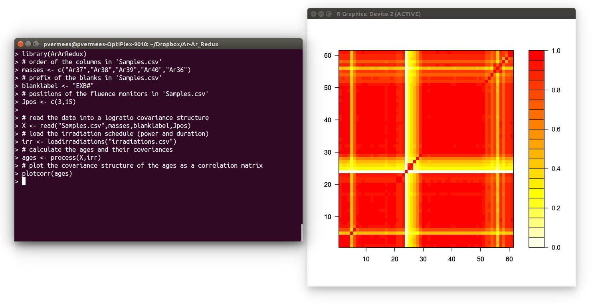

<html>
<title>Ar-Ar_Redux</title>
<link href="../css/mystyle.css" rel="stylesheet" type="text/css"/>
<link href="../css/prettify.css" rel="stylesheet" type="text/css"/>
<script src="../js/prettify.js"></script>
<script src="../js/run_prettify.js"></script>
<script src="../js/lang-r.js"></script>
</html>
<body>

<h3 align="middle">Ar-Ar_Redux: rigorous error propagation of <sup>40</sup>Ar/<sup>39</sup>Ar data with <tt>R</tt></h3>

<div class="centered">

<a href="Ar-Ar_Redux.png">
</a>

<p></p>

<tt>Ar-Ar_Redux</tt> is a <sup>40</sup>Ar/<sup>39</sup>Ar data
reduction package in the <tt>R</tt> programming environment, which
takes into account all covariances in the error propagation, including
those associated with multi-collector mass spectrometry. Caveats: (a)
in its current version, the program is command-line based. A more
user-friendly version with graphical user interface is in development;
(b) <tt>Ar-Ar_Redux</tt> currently only reads Argus-VI
data. Functionality for other data will be added based on user
feedback.  (c) <tt>Ar-Ar_Redux</tt> has not yet been extensively
tested.  Any help with this will be gratefully accepted.
For details about the underlying algorithms, see 
<a href='../papers/VermeeschGCA2015'>Vermeesch, P., 2015.</a>
Revised error propagation of <sup>40</sup>Ar/<sup>39</sup>Ar data,
including covariances. <i>Geochimica et Cosmochimica Acta</i>, 171,
pp.325-337.

<p></p>
After installing <tt>R</tt> from <a
href="http://r-project.org">http://r-project.org</a>, Ar-Ar_Redux can
be installed by typing

<pre class="prettyprint lang-r">
install.packages('ArArRedux')
</pre>

Once installed, the package can be loaded by typing

<pre class="prettyprint lang-r">
library(ArArRedux)
</pre>

This page contains a number of very simple tutorials illustrating the
most common usages of the package. Full documentation of the public
functions is provided in <a
href="http://cran.r-project.org/web/packages/ArArRedux/ArArRedux.pdf">this</a>
PDF document. For this tutorial, we will use the following example
input files, which are also built into <tt>Ar-Ar_Redux</tt> and
accessible through the <tt>system.file()</tt> command:

<p></p>
<table style="background-color: cyan; border-width: 0; width: 100%">
<tbody>
<tr><td align="center"><b>Downloads</b></td><td></td></tr>
<tr><td align="center"><a href="http://ucl.ac.uk/~ucfbpve/software/Samples.csv">Samples.csv</a></td>
<td>some ARGUS-VI sample data from the University of Melbourne</td></tr>
<tr><td align="center"><a href="http://ucl.ac.uk/~ucfbpve/software/irradiations.csv">irradiations.csv</a></td>
<td>the irradiation schedule</td></tr>
<tr><td align="center"><a href="http://ucl.ac.uk/~ucfbpve/software/Ca-salt.csv">Ca-salt.csv</a></td> 
<td>isotopic analyses of the Ca-interference monitors</td></tr>
<tr><td align="center"><a href="http://ucl.ac.uk/~ucfbpve/software/K-glass.csv">K-glass.csv</a></td>
<td>isotopic analyses of the K-interference monitors</td></tr>
<tr><td align="center"><a href="http://ucl.ac.uk/~ucfbpve/software/Calibration.csv">Calibration.csv</a></td>
<td>detector intercalibration data</td></tr>
<tr><td align="center"><a href="http://ucl.ac.uk/~ucfbpve/software/AirH1.csv">AirH1.csv</a></td> 
<td>mass fractionation measurement on detector H1</td><tr>
<tr><td align="center"><a href="http://ucl.ac.uk/~ucfbpve/software/AirAX.csv">AirAX.csv</a></td>
<td>mass fractionation measurement on detector AX</td>
<tr><td align="center"><a href="http://ucl.ac.uk/~ucfbpve/software/AirL2.csv">AirL2.csv</a></td>
<td>mass fractionation measurement on detector L2</td>
<tr><td align="center"><a href="http://ucl.ac.uk/~ucfbpve/software/AirL1.csv">AirL1.csv</a></td>
<td>mass fractionation measurement on detector L1</td>
</tr>
</tbody></table>
<p></p>

The following lines of code plot the
time resolved <sup>40</sup>Ar signal of sample "MD2-1a":

<pre class="prettyprint lang-r">
masses <- c("Ar37","Ar38","Ar39","Ar40","Ar36")
d <- loaddata("Samples.csv",masses)
plot(d,"MD2-1a","Ar40")
</pre>

The next example shows the simplest case of a data reduction without
interference corrections, detector calibrations or fractionation
correction:

<pre class="prettyprint lang-r">
# order of the columns in 'Samples.csv'
masses <- c("Ar37","Ar38","Ar39","Ar40","Ar36")
# prefix of the blanks in 'Samples.csv'
blanklabel <- "EXB#"
# positions of the fluence monitors in 'Samples.csv'
Jpos <- c(3,15)

# read the data into a logratio covariance structure
X <- read("Samples.csv",masses,blanklabel,Jpos)
# load the irradiation schedule (power and duration)
irr <- loadirradiations("irradiations.csv")
# calculate the ages and their coveriances
ages <- process(X,irr)
# print a table with ages and standard errors
summary(ages)
</pre>

A full example including interference corrections, detector calibrations
and fractionation correction:

<pre class="prettyprint lang-r">
# see previous example for details about the next three lines
masses <- c("Ar37","Ar38","Ar39","Ar40","Ar36")
blanklabel <- "EXB#"
Jpos <- c(3,15)

# order of the columns in Calibration.csv
dlabels <- c("H1","AX","L1","L2")

X <- read("Samples.csv",masses,blanklabel,Jpos,kfile="K-glass.csv",
          cafile="Ca-salt.csv",dfile="Calibration.csv",dlabels)
irr <- loadirradiations("irradiations.csv")

# create a list with fractionation corrections for the denominator isotopes of the age equation
fract <- list(Ar37=fractionation("AirL2.csv","L2",PH=TRUE),
	      Ar39=fractionation("AirAX.csv","AX",PH=TRUE)
              Ar40=fractionation("AirH1.csv","H1",PH=FALSE))

ages <- process(X,irr,fract)
summary(ages)
</pre>

In the following example, the interference corrections are specified
manually, rather than from co-irradiated K-glass or Ca-salt:

<pre class="prettyprint lang-r">
# see previous examples for details of next six lines
masses <- c("Ar37","Ar38","Ar39","Ar40","Ar36")
blanklabel <- "EXB#"
Jpos <- c(3,15)
X <- read("Samples.csv",masses,blanklabel,Jpos)
irr <- loadirradiations("irradiations.csv")
fract <- list(Ar37=fractionation("AirL2.csv","L2",PH=TRUE),
	      Ar39=fractionation("AirAX.csv","AX",PH=TRUE)
              Ar40=fractionation("AirH1.csv","H1",PH=FALSE))

# assume log(36Ar/37Ar) = log(39Ar/37Ar) in Ca-salt 
# with variances = 0.0001 and covariances = 0
ca <- interference(intercepts=c(1,1),num=c("Ar39","Ar36"),
                   den=c("Ar37","Ar37"),irr="UM52",label="Ca-salt",
                   covmat=matrix(c(0.001,0,0,0.001),nrow=2))
# assume log(40Ar/39Ar) = -4.637788 in co-irradiated 
# K-glass with variance 7.9817e-4
k <- interference(intercepts=-4.637788,covmat=7.9817e-4,num="Ar40",
                  den="Ar39",irr="UM52",label="K-glass")

ages <- process(X,irr,fract,ca,k)
summary(ages)
</pre>

Default parameters, such as the standard age, air ratio or decay
constants can be queried or modified using the <tt>param</tt>
function:

<pre class="prettyprint lang-r">
# query the air ratio
param(X)$air
# modify the standard age (ts) and its standard error (sts)
Y <- param(X, ts=27.4, sts=0.4)
# list all the parameters
param(Y)
</pre>

Post processing the results:

<pre class="prettyprint lang-r">
# calculate and print the weighted mean of all samples with prefix "FC"
print(weightedmean(ages,"FC"))

# calculate the weighted mean of a list of samples
print(weightedmean(ages,c("MD2-1c","MD2-1d","MD2-1e","MD2-1f","MD2-1g")))

# plot the covariance structure of the ages as a correlation matrix
plotcorr(ages)
</pre>

The output of the <tt>plotcorr</tt> function is shown in the image at
the top of this page. Counting from the lower left corner of the
matrix, each row or column corresponds to a sample, in the order given
by <tt>ages$labels</tt>.

<p></p>

<script language="javascript" type="text/javascript">
var sc_project=2277130; 
var sc_invisible=1; 
var sc_partition=20; 
var sc_security="1b48b58b"; 
</script>

<script language="javascript" src="http://www.statcounter.com/counter/counter.js" type="text/javascript"></script>

<noscript><a href="http://www.statcounter.com/" target="_blank">
</a></noscript>
</div>
</body>
